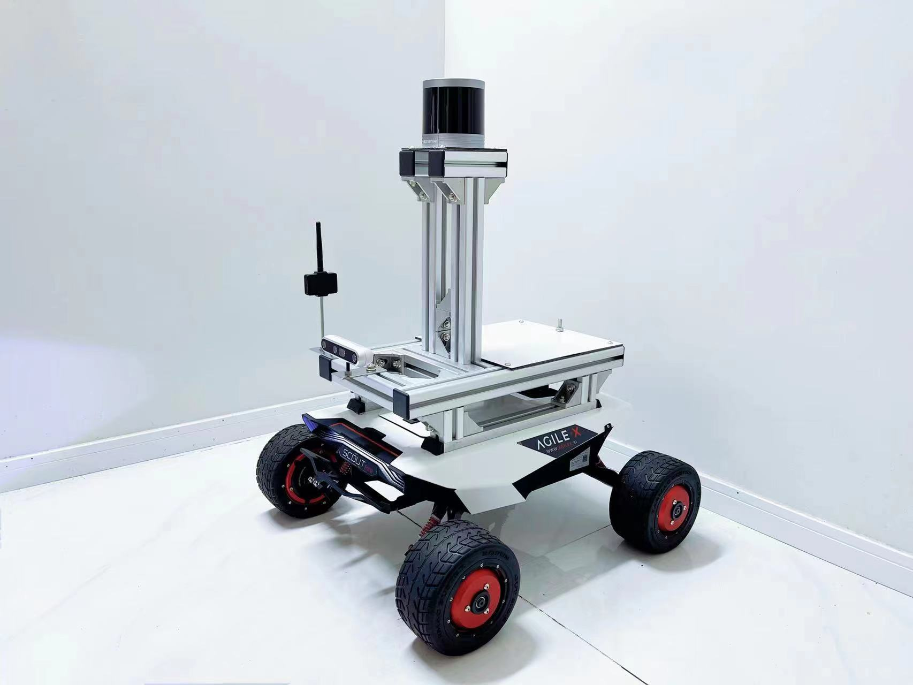

杨博Bo Yang
副教授，硕士生导师
南京信息工程大学
人工智能学院（未来技术学院）
智能机器人自主感知、定位与导航
- 邮箱
- 地址
- 临江楼A1916
招生说明 Prospective Students
欢迎对机器人定位导航（Localization and Navigation）、多传感器融合（Multi-Sensors Fusion）、计算机视觉（Computer Vision）和核磁共振重建（MRI Reconstruction）感兴趣的本科生与研究生加入课题组！
我们尤其看重以下几点：
- 自驱力与主动性：愿意主动学习、探索问题，能够自主安排时间、制定计划并持续推进项目。
- 持续投入的意愿：能够为科研投入稳定的时间和精力，遇到困难时愿意尝试、思考并主动寻求帮助。
- 良好的沟通习惯：及时交流进展与问题，积极参与讨论，对自己承担的工作认真负责。
课题组倡导自主探索、充分交流的培养方式。导师会提供必要的指导与支持，但不会频繁督促或逐项安排任务，希望同学能够逐步成为自己项目的主要推动者。本科生可以从基础学习和小项目起步，研究生则需逐步培养独立开展研究的能力。相比已有的科研经历，我们更看重学习意愿、责任心和持续行动的能力。
对于硕士：感兴趣的同学请通过学校正式招生渠道申请，通过初试后通过邮件联系。
对于本科生：对相关方向感兴趣的同学可以直接通过邮件与我联系，本课题组尤其关注本科生科研项目！
研究方向 Research Interests
- 机器人自主定位与导航：面向室内及复杂环境的感知与位置估计。
- 多传感器数据融合：融合视觉、惯性、UWB 与三维激光雷达等信息，研究协同感知。
- 机器视觉与深度学习：探索图神经网络、注意力与生成模型在定位任务中的应用。
- 多模态核磁共振图像重建与合成：通过融合不同模态的互补信息，研究高质量MRI图像重建与跨模态合成方法。
科研项目与成果 Projects & Achievements
科研项目 Research Projects
专利成果 Patents
指导学生竞赛 Student Competitions
代表论文 Selected Publications
/
科研平台 Research Facilities
研究依托移动机器人与多源感知设备开展，主要平台包括：
- 松灵 Scout-Mini 移动机器人底盘
- Intel RealSense D455 / ZED 2i 视觉惯性传感器
- RS-Helios-5515 三维激光雷达
- LinkTrack-P/S 超宽带传感器与 RTX 4090 计算设备

学生去向 Student Destinations
| 毕业年份 | 学生 | 层次 | 升学去向 |
|---|